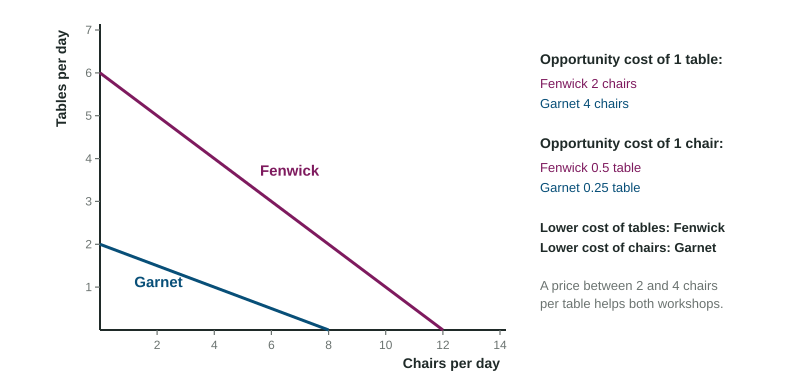

Fenwick Workshop can make 12 chairs or 6 tables in a day. Garnet Workshop, smaller and less experienced, can make 8 chairs or 2 tables. Fenwick is better at both. It might seem that Fenwick has nothing to gain from dealing with Garnet. It does, and so does Garnet, and the reason is one of the most useful ideas in economics: what matters is not who is faster, but who gives up less.
Absolute and comparative advantage
A producer has an absolute advantage in a good when it can make more of it with the same resources (or the same amount with fewer resources). Fenwick has the absolute advantage in both chairs (12 against 8) and tables (6 against 2).
A producer has a comparative advantage in a good when it can make it at a lower opportunity cost, giving up less of the other good for each unit. Comparative advantage, not absolute advantage, decides who should make what.

Opportunity costs from an output table
An output table gives how much of each good a producer can make with the same resources. The opportunity cost of one unit of a good is the other good given up divided by the good gained.
Worked example: the two workshops.
| Opportunity cost of 1 table | Opportunity cost of 1 chair | |
|---|---|---|
| Fenwick (12 chairs or 6 tables) | chairs | table |
| Garnet (8 chairs or 2 tables) | chairs | table |
- Tables: Fenwick gives up 2 chairs, Garnet 4. Fenwick has the comparative advantage in tables.
- Chairs: Fenwick gives up half a table, Garnet a quarter. Garnet has the comparative advantage in chairs.
- Check: the two costs for each producer are reciprocals (2 and 0.5; 4 and 0.25), so a producer can never have the comparative advantage in both goods.
Opportunity costs from an input table
Sometimes the table gives the resources needed for one unit, such as hours of labor, instead of output. Then the rule flips: the opportunity cost of a good is the hours for that good divided by the hours for the other good, because those hours could have made that many units of the other good.
Worked example: rice and cloth. In the invented country of Corvania, a bushel of rice takes 2 hours and a bolt of cloth 4. In Lumeria, rice takes 3 hours and cloth 9.
- Absolute advantage: Corvania needs fewer hours for both goods, so it has the absolute advantage in both.
- Cloth: Corvania bushels of rice; Lumeria . Corvania has the comparative advantage in cloth.
- Rice: Corvania bolt; Lumeria bolt. Lumeria has the comparative advantage in rice.
The common slip is using the output rule on an input table, which flips every answer. Before dividing, ask: does this table show what is made, or what it takes to make it?
Specialization and terms of trade
When each producer specializes in the good it makes at the lower opportunity cost, the two together make more in total. They then trade. The terms of trade, the price of one good in units of the other, help both sides when they fall between the two producers' opportunity costs. A table costs Fenwick 2 chairs and Garnet 4, so any price between 2 and 4 chairs per table works. At 3 chairs per table, Fenwick receives more for each table than the 2 chairs it gave up to make it, and Garnet pays less than the 4 chairs it would give up to make a table itself.
Because each side gets the other good more cheaply than it could make it, both can end up consuming a combination outside their own PPC. If Fenwick makes tables and trades some for chairs, it might end with 6 chairs and 4 tables, a point beyond its own line (on which 6 chairs leaves room for only 3 tables). Those extra goods are the gains from trade. If the terms fall outside the range, at 1 chair or 5 chairs per table, one side would be better off making both goods itself, and it would not trade. And if two producers have the same opportunity costs, no price helps both, so specialization brings no gain.